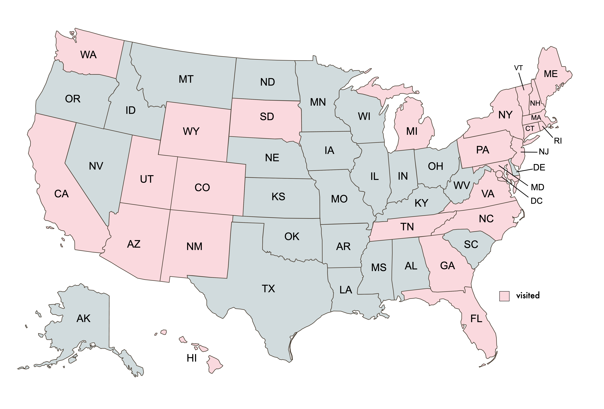
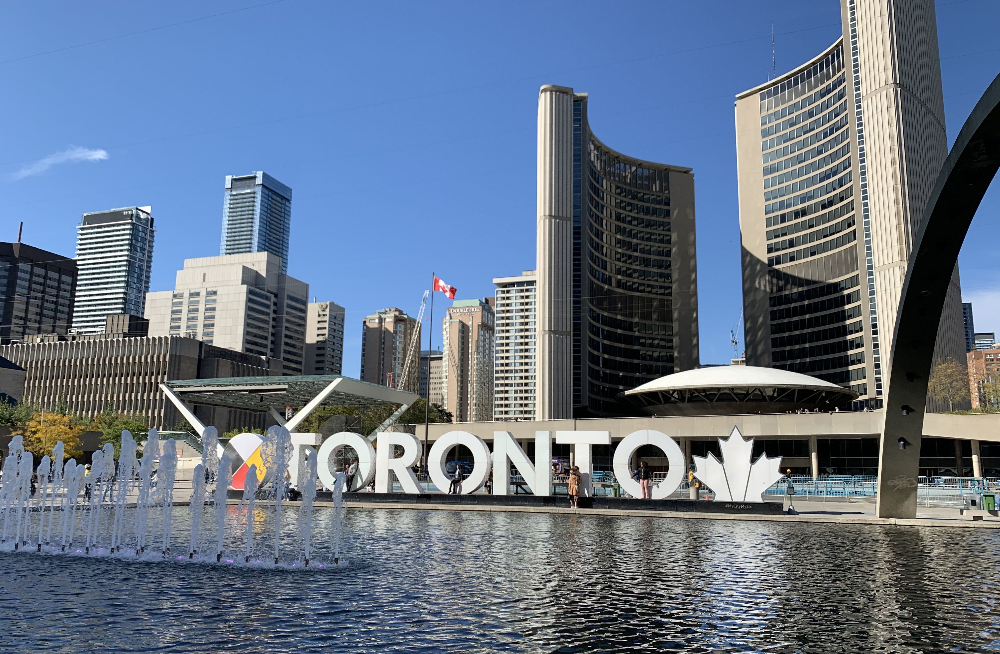

DESTINATIONS ↣ NORTH AMERICA
UNITED STATES
STATES VISITED
(24/50)

Despite all of the amazing places I've been, my home country still remains one of my favorites. The diverse landscape of the U.S., ranging from cities to countrysides, mountaintops to beaches, and deserts to forests, allows for endless adventures and sights to see. Regardless of the time of year, you could find yourself skiing down the slopes of Colorado, tanning on the sandy beaches of Florida, or hiking through any of our beautiful national parks. While the U.S. has plenty of major cities and popular tourist attractions to visit, there are also so many hidden gems throughout the country that offer a completely different yet equally as valuable of an experience. Not only does the U.S. house a wide variety of topographical beauty, but it is also known as a melting pot of different nationalities, cultures, and ethnicities. Everywhere you look, you will find people of unique backgrounds living together and sharing their values, traditions, and (most importantly, in my opinion) cuisines with one another.
MUST-DOs
CANADA
Canada is home to 10 provinces and 3 territories. Out of those, I've only been able to visit Ontario and Quebec but hope to expand my travels throughout the country, especially out West. If you're a foodie like I am, I highly recommend taking a trip to the city of Toronto. In my humble opinion, I think it offers some of the most delicious and authentic Chinese food you can find outside of China.
MEXICO
Mexico is a great destination in North America for anyone who's looking for a relaxing beach vacation. Many tourists choose to stay in a resort, which typically includes beach access, an assortment of delicious food, and refreshing drinks– what more could you ask for! Personally, I have taken a family vacation in Cancun and a trip with friends to Cabo San Lucas. The white sand beaches in Cancun were unbeatable, while the water activities and festive nightlife in Cabo made for an exciting and unforgettable visit. When in Cancun, be sure to take a day trip to see the archeological site of Chichén Itzá, a beautiful complex of ancient Mayan ruins.